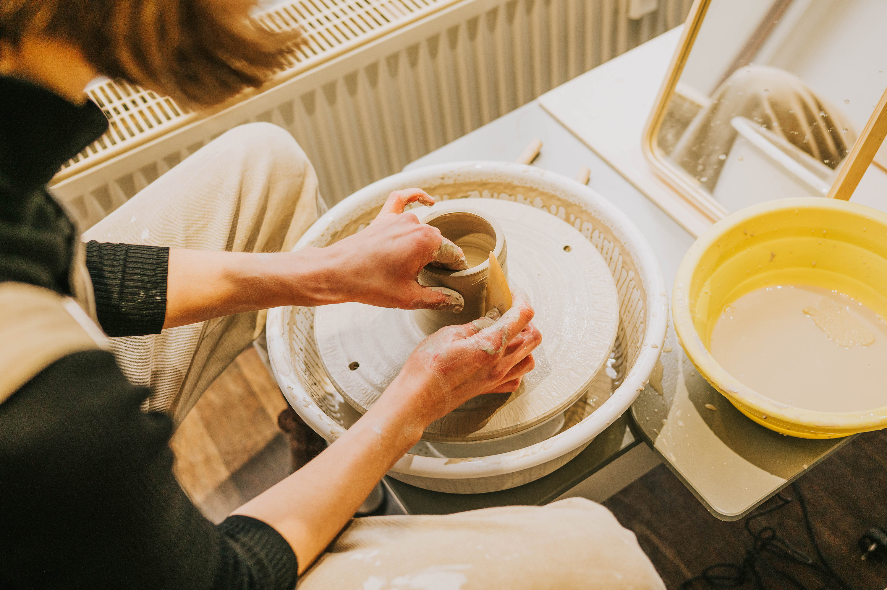

Join our wheelthrowing classes, handbuilding workshops, book a private session or a team event.
We offer classes for all skill levels, from beginners to advance potters.
Teambuilding events
Teambuilding events are a great way to foster collaboration and creativity among colleagues.
Our experienced instructors will guide your team through the process of creating unique ceramic pieces, promoting teamwork.
We can accommodate groups of various sizes and tailor the experience to your team's needs.
We offer workshops both in our srudio or in your chosen space, providing a unique and memorable experience for your team.
During the warmer months we also organize outdoor ceramic workshops in a beautiful greenhouse on a flower farm, where you can connect with nature while creating your own pottery.
